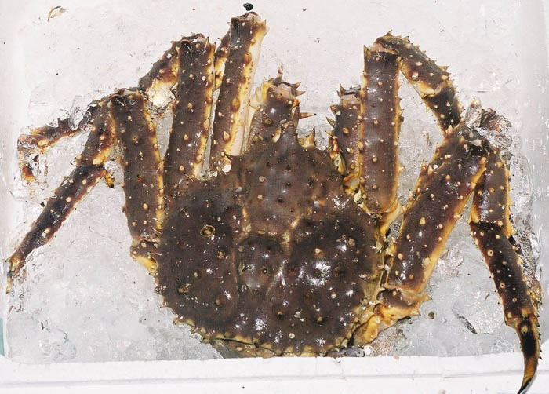

Caranguejo-real-vermelho
Paralithodes camtschaticus
Habitat
Vive principalmente nas águas frias do oceano Pacífico Norte e do mar de Bering, além de regiões do oceano Ártico. Costuma habitar fundos marinhos arenosos, lamacentos ou rochosos, podendo ser encontrado em diferentes profundidades.
Alimentação
É onívoro e alimenta-se de moluscos, estrelas-do-mar, ouriços-do-mar, vermes, pequenos crustáceos e outros organismos que vivem no fundo oceânico. Também pode consumir restos de matéria orgânica.
Características
Possui uma carapaça larga e resistente, pernas compridas e espinhos distribuídos pelo corpo. Apresenta coloração avermelhada ou alaranjada, especialmente nos indivíduos adultos. Apesar da aparência semelhante à de um caranguejo comum, pertence a um grupo de crustáceos conhecido como caranguejos-reais.
Curiosidades
- Apesar do nome, não é um caranguejo verdadeiro, mas um crustáceo anomuro.
- Pode apresentar uma abertura entre as pernas que permite distinguir seu corpo de outros caranguejos.
- É uma espécie de grande importância econômica para a pesca em regiões de águas frias.